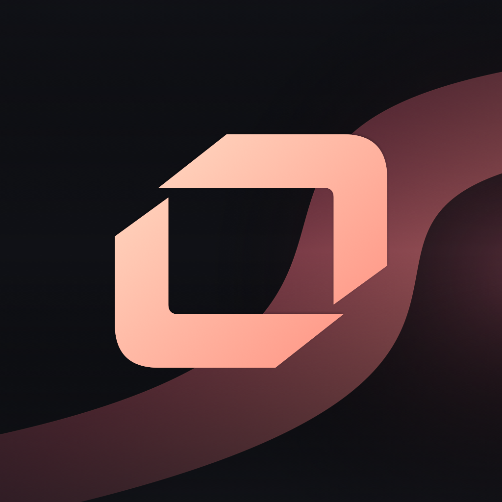

Close
at hand.
Your Mac. Within reach. A focused place for the apps you love, with a little less distance between you and your workspace.

A window.
A connection.
A little momentum.
Two offset windows become a continuous ribbon. Open corners suggest a view moving from one device to another. The symbol is geometric and quiet, with a forward cut that gives App Stream its own signature.
Give the symbol one quarter of its width in clear space. Use it at 24 pt or larger in UI. Keep its two cuts and its proportions intact.
One identity, two distribution names.
Use App Stream for the App Store edition and Vamp Stream for the website edition. They share the symbol, artwork, typography and interface. Bundle IDs, trust and wire names remain unchanged.


Ink, warmed
by a ribbon of light.
The canvas carries the color. Clear glass carries the interface. Coral marks identity and selection; warm ivory gives the main action a clear destination.
#101116#662E38#FF8576#F7F2ED#BBB0B4#8ED4ACText accents adapt: #FF998B on dark, #A63433 on light. Main text adapts from #F7F2ED to #242127; supporting text from #BBB0B4 to #6C6167. Status always includes a word. Color alone never carries state.
A familiar voice.
More breathing room.
Use the platform system face: SF Pro on Apple devices. Large, medium-weight headlines establish the mood. Body copy stays conversational, while small monospaced labels bring a precise studio character.
Within reach.
Display / 48 pt · Medium · −2.1 tracking
The apps you love on your Mac,
right here on your iPhone or iPad.
Use Dynamic Type styles for functional text. At accessibility sizes, headlines use largeTitle and vertical layouts grow naturally. SF fonts are supplied by the OS; this kit does not redistribute them.
Glass with
a sense of place.
A continuous background gives the glass something to catch. Fine edges and a restrained reading plate separate the controls without losing transparency.
Studio Mac
A familiar place, a little closer.
Space you can feel.
28 pt panels, 24 pt page insets, at least 44 pt touch targets. Primary actions are 58 pt high and shaped as capsules.
Respond, then settle.
A critically damped spring with 0.32 s response. Press scale 0.975. Reduce Motion removes scale and travel; the background stays still.
Native at every layer.
Clear Liquid Glass on iOS 26+, ultra-thin material on earlier supported versions. Reduce Transparency replaces glass with an opaque surface.
Lead with intent.
One ivory primary action per decision. Glass for secondary actions, circles for icon controls, native sheets and menus for focused choices.
Your Mac first.
Your apps next.
Start with the user's workspace. Keep setup inside a sheet and app selection one step away. Both Sync and Assistant connections follow the same visual rhythm.
Find your Mac
Saved and nearby Macs take the home screen. Real availability, a clear browse action, and a separate menu for forgetting a Mac.
Pair once
Scan the Mac's pairing code. A private address is an alternative. Show the device fingerprint for comparison before approval.
Pick an app
Search one library. Filter All apps, Running or Favorites. Touch and hold for window choices and additional actions.
Stay in flow
A floating glass dock keeps controls together. Hide it for focus, reveal it with one tap. The picture reserves space above the dock.


Screenshots are from the implemented SwiftUI interface. Library and player previews use explicitly labeled sample data; they are not evidence of a live streaming session. Release builds omit the design preview routes.
Warm. Direct.
Quietly confident.
Keep interface copy specific to the next action. Use “Browse apps” before selecting a window, “Scan pairing code” during setup, and a plain explanation when a Mac is unavailable.
Within reach.”
The product promise. Familiar tools, available through a private connection.
needs attention.”
Explain the current state. Offer a useful next step. Avoid invented connection status, security badges or performance claims.
Ready to make
your own.
Vector originals, both Ribbon and Classic app icons, transparent marks, both wallpapers and portable design tokens. Choose either icon in Settings; the selection also updates the logo inside the app. The SwiftUI implementation is the source of truth for live materials and behavior.
ASSETS: APACHE-2.0, AS IN THE REPOSITORY.
WORDMARKS USE SYSTEM FONT FALLBACKS.
NO THIRD-PARTY FONT FILES INCLUDED.